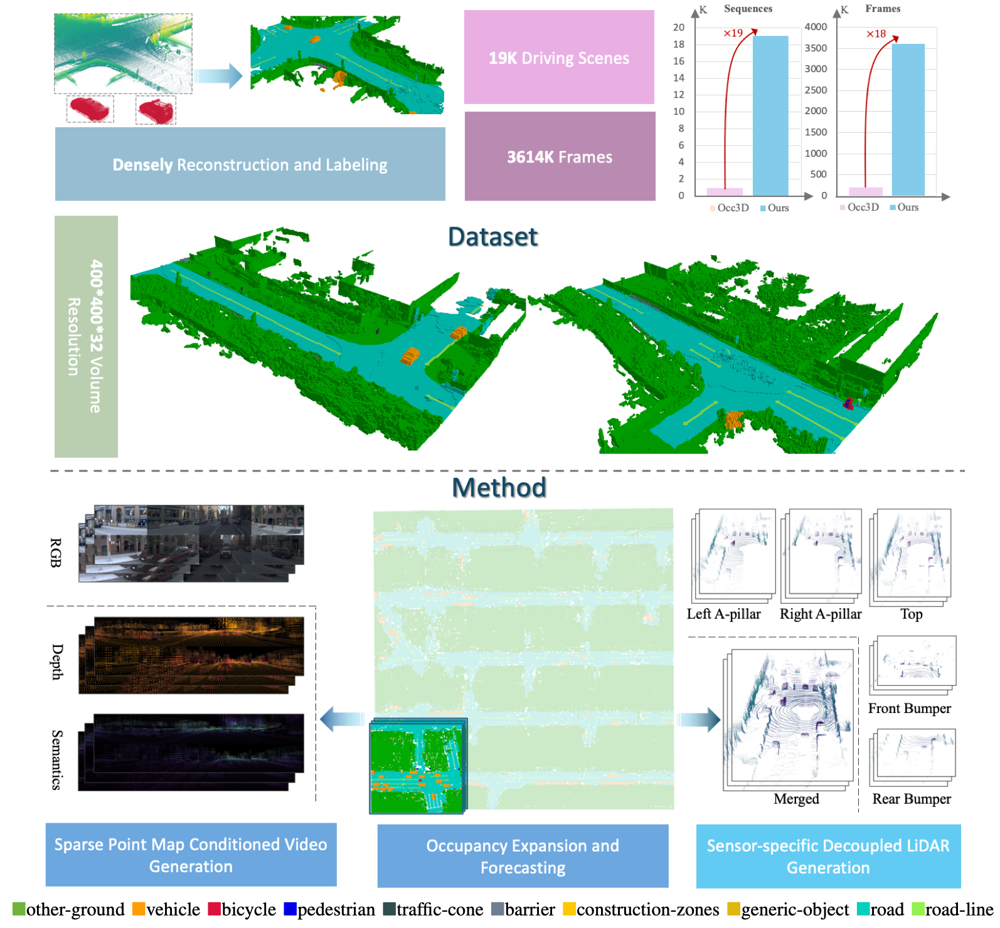
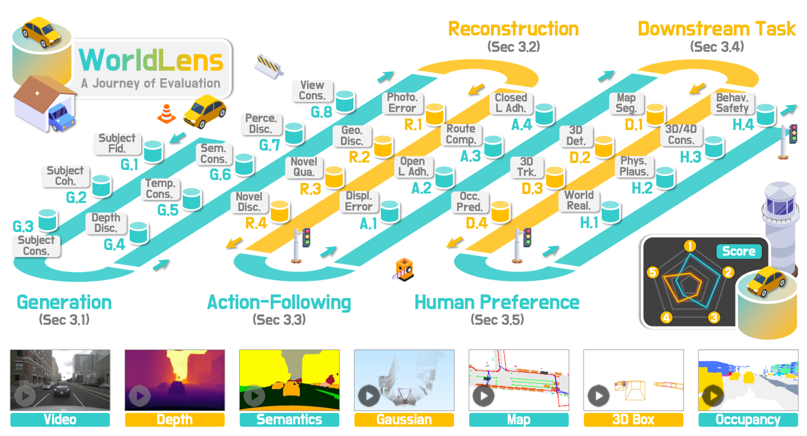
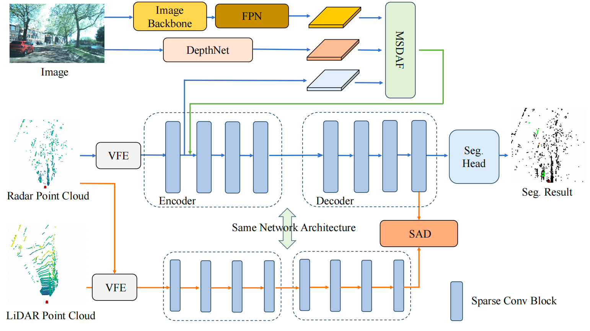
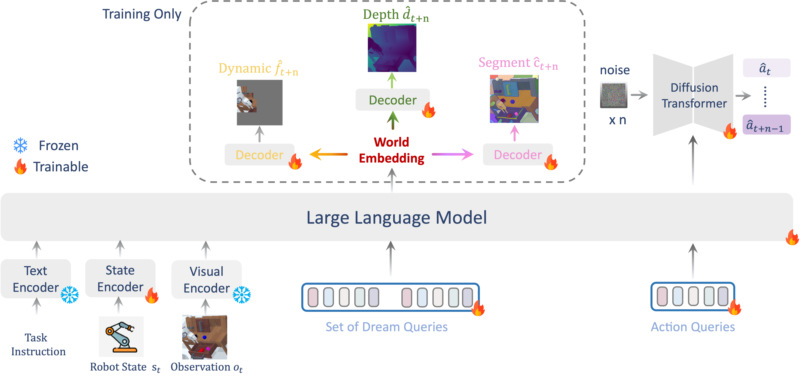
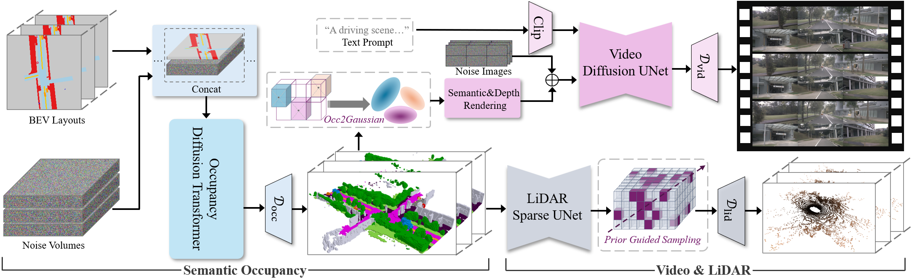
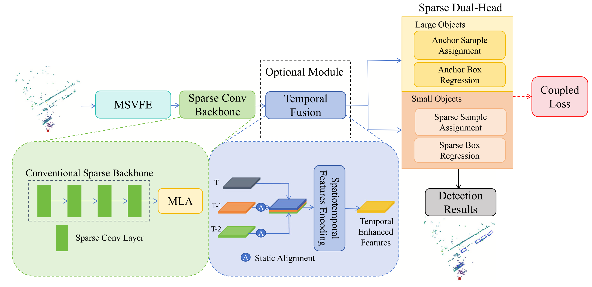
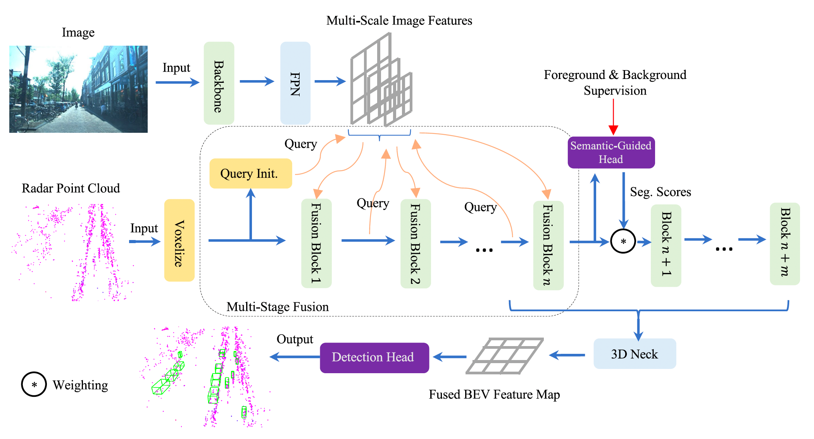

|
Hongsi Liu Hongsi Liu received the B.S. degree in Electronic Information Science and Technology from Sun Yat-sen University, Guangzhou, China, in 2022. He is currently pursuing the Ph.D. degree in Information and Communication Engineering with the Department of Electronic Engineering and Information Science, University of Science and Technology of China, Hefei, China. His research interests include deep learning, autonomous driving, robot, 3D understanding and generation. |

|
|  |
Scaling Up Occupancy-centric Driving Scene Generation: Dataset and Method
Bohan Li *, Xin Jin †, Hu Zhu *, Hongsi Liu *, Ruikai Li *, Jiazhe Guo , Kaiwen Cai , Chao Ma , Yueming Jin , Hao Zhao , Xiaokang Yang , Wenjun Zeng , IEEE Transactions on Pattern Analysis and Machine Intelligence, 2026 [Paper] [Project Page] [Code] [Data] |
|  |
WorldLens: Full-Spectrum Evaluations of Driving World Models in Real World
Ao Liang *, Lingdong Kong *, Tianyi Yan *, Hongsi Liu *, Wesley Yang *, Ziqi Huang , Wei Yin , Jialong Zuo , Yixuan Hu , Dekai Zhu , Dongyue Lu , Youquan Liu , Guangfeng Jiang , Linfeng Li , Xiangtai Li , Long Zhuo , Lai Xing Ng , Benoit R. Cottereau , Changxin Gao , Liang Pan , Wei Tsang Ooi , Ziwei Liu CVPR, 2026 [Oral] [Paper] |
|  |
MKFusion: Multi-modal knowledge distillation for 4D radar point cloud segmentation in autonomous driving
Yunting Yang*, Jun Liu†, Hongsi Liu*, Guangfeng Jiang. Knowledge-Based Systems, 2026 [Paper] [Code] |
|  |
DreamVLA: Dream Comprehensive World Knowledge for Vision-Language-Action Model
Wenyao Zhang*, Hongsi Liu*, Zekun Qi*, Yunnan Wang*, Xinqiang Yu, Jiazhao Zhang, Runpei Dong, Jiawei He, Zhizheng Zhang, He Wang, Li Yi, Wenjun Zeng, Xin Jin. NeurIPS, 2025 [Paper] [Code] |

|
Hybrid-grained Feature Aggregation with Coarse-to-fine Language Guidance for Self-supervised Monocular Depth Estimation
Wenyao Zhang*, Hongsi Liu*, Bohan Li *, Jiawei He, Zekun Qi, Yunnan Wang, Shengyang Zhao , Xinqiang Yu , Wenjun Zeng, Xin Jin. ICCV, 2025 [Paper] [Code] |
|  |
UniScene: Unified Occupancy-centric Driving Scene Generation
Bohan Li*, Jiazhe Guo*, Hongsi Liu *, Yingshuang Zou, Yikang Ding, Xiwu Chen, Hu Zhu, Feiyang Tan, Chi Zhang, Tiancai Wang, Shuchang Zhou, Li Zhang, Xiaojuan Qi, Hao Zhao, Mu Yang, Wenjun Zeng, Xin Jin. CVPR, 2025 [Project] [PDF] [Code] |
|  |
Radar M3-Net: Multi-scale, multi-layer, multi-frame network with a large receptive field for 3D object detection
Yunting Yang*, Jun Liu†, Hongsi Liu*, Guangfeng Jiang. Expert Systems with Applications, 2025 [Paper] |
|  |
MSSF: A 4D Radar and Camera Fusion Framework With Multi-Stage Sampling for 3D Object Detection in Autonomous Driving
Hongsi Liu, Jun Liu†, Guangfeng Jiang. IEEE Transactions on Intelligent Transportation Systems, 2025 [Paper] [Code] |